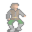

Eryndor¶Where to find Eryndor: Mt galmore 0 h 1, Mt galmore 0 h 1 2, Mt galmore north-west tower f 2, Mt galmore south-west tower f 2
{ .sprite }
| Type | NPC/Enemy (talks, but can also be fought) |
| Found in | Mt galmore 0 h 1, Mt galmore 0 h 1 2, Mt galmore north-west tower f 2 |
| Class | Ghost |
| HP | 287 |
| XP when defeated | 989 |
| Immune to crits | Yes |
| Introduced | v0.8.14 |
You can fight Eryndor
Answering “I just hope I don't die for this.” starts a fight with Eryndor.
Combat¶
| Class | Ghost |
| HP | 287 |
| XP when defeated | 989 |
| Damage | 4 to 14 |
| AC | 185 |
| BC | 291 |
| DR | 25 |
| Attacks per turn | 1 (10 AP each, 10 AP) |
| Crit chance | 9% (×3.0) |
Immune to critical hits.
When you hit it: On target: Blindness (magnitude 1, 3 rounds, 80% chance)
Verified against v0.8.18 monster data.
Locations¶
| Map | Region | Up to | Notes |
|---|---|---|---|
| Mt galmore 0 h 1 | – | 1 | Appears later, during a quest |
| Mt galmore 0 h 1 2 | – | 1 | Appears later, during a quest |
| Mt galmore north-west tower f 2 | – | 1 | Appears later, during a quest |
| Mt galmore south-west tower f 2 | – | 1 | Appears later, during a quest |
Quests that count defeats¶
- A conversation with stepping on a trigger on Mt galmore 0 h 1, stepping on a trigger on Mt galmore 0 h 1 2 checks that this enemy has been defeated.
Quests¶
- Restless in the grave: stages 50, 60, 65, 85, 90, 110, 123
- Galmore story flags (hidden flag): stages 15, 17
Dialogue simulator¶
Set your quest stages and items, then talk to Eryndor. Same rules as the game: same checks, same options, same effects.
Rules verified against v0.8.18 game code (ConversationController.java) and dialogue data.
Dialogue (50 lines)
Exactly as in the game files. Each line appears once; links jump to where a choice leads.
mg_eryndor_selector (silent check: the first matching branch below is taken) — effects: sets stage 15 of Galmore story flags (hidden flag)
- branch 1 (if latest stage of Restless in the grave is 50) → mg_eryndor_give_items_20
- branch 2 (if reached stage 77 of Restless in the grave; NOT reached stage 85 of Restless in the grave) → mg_eryndor_give_stolen_ring_10
- branch 3 (if latest stage of Restless in the grave is 85) → mg_eryndor_give_stolen_ring_30
- branch 4 (if reached stage 70 of Restless in the grave; NOT reached stage 90 of Restless in the grave) → mg_eryndor_give_ring_10
- branch 5 (if reached stage 110 of Restless in the grave) → mg_eryndor_keep_ring_20
- branch 6 (if latest stage of Restless in the grave is 60) → mg_eryndor_vaelric_jump_to30
- branch 7 (if latest stage of Restless in the grave is 65) → mg_eryndor_currently65
- branch 8 (if reached stage 123 of Restless in the grave) → mg_eryndor_music_box_default_10
- branch 9 → mg_eryndor_ask_for_items_10
mg_eryndor_give_items_20 Eryndor: “I have a story to tell only to "friends". So being my "friend" means giving me those two items you found.”
- Next → mg_eryndor_give_items_10
mg_eryndor_give_stolen_ring_10 Eryndor: “So, you return with my ring?”
- “Yes, here it is. [Hand it over]” (if hand over 1× Cursed ring of focus) → mg_eryndor_give_stolen_ring_20
- “Yes, here it is. [Take it off and hand it over.]” (if wearing (and give up) Cursed ring of focus) → mg_eryndor_give_stolen_ring_20
mg_eryndor_give_stolen_ring_30 Eryndor: “You really did it? You took it from him? Hah... good. Maybe now he will understand what it is to have something stolen away.”
mg_eryndor_give_ring_10 Eryndor: “So, you return with my ring?”
- “Yes, here it is. [Hand it over]” (if hand over 1× Cursed ring of focus) → mg_eryndor_give_ring_20
- “Yes, here it is. [Take it off and hand it over.]” (if wearing (and give up) Cursed ring of focus) → mg_eryndor_give_ring_20
- “I already gave it to you.” (if reached stage 17 of Galmore story flags (hidden flag); NOT carry 1× Cursed ring of focus) → mg_eryndor_give_ring_50
- “I have it, but I've decided to keep it for myself.” (if carry 1× Cursed ring of focus) → mg_eryndor_keep_ring_10
- “I'm wearing it, and you can't have it.” (if wearing Cursed ring of focus) → mg_eryndor_keep_ring_10
- “Yes, but I forgot to bring it with me. I will have to come back later.” (if NOT carry 1× Cursed ring of focus; NOT wearing Cursed ring of focus) → conversation ends
mg_eryndor_keep_ring_20 Dummy NPC: “Eryndor's spectral form flickers violently, the air around him growing thick with a bitter chill.”
- Next → mg_eryndor_keep_ring_30
mg_eryndor_vaelric_jump_to30 Eryndor: “We were in the middle of my story...”
- Next → mg_eryndor_vaelric_30
mg_eryndor_currently65 Eryndor: “What are you waiting for? Go get my ring back from Vaelric.”
mg_eryndor_music_box_default_10 Eryndor: “Have you brought the music box to Celdar yet?”
- “Yes” (if reached stage 130 of Restless in the grave) → mg_eryndor_music_box_default_20
- “Nope.” → mg_eryndor_music_box_default_15
mg_eryndor_ask_for_items_10 Eryndor: “Oh, a human? A human, indeed. How surprising. Yes, surprising indeed, but useful. Yes, useful indeed.”
- “Who are you?” → mg_eryndor_ask_for_items_20
mg_eryndor_give_items_10 Eryndor: “Yes, you need to give me my things or we are not friends.”
- “I already did.” (if latest stage of Restless in the grave is 50) → mg_eryndor_vaelric_friend
- “What does that mean, "friends"?” → mg_eryndor_give_items_20
- “Umm, I guess so. Here. [You hand over the broken bell and the mysterious music box.]” (if hand over 1× Broken bell; hand over 1× Mysterious music box) → mg_eryndor_vaelric_friend
mg_eryndor_give_stolen_ring_20 Dummy NPC: “Eryndor's ghost flickers with anticipation as you hold out the ring. His spectral fingers pass through it at first, but he quickly pulls back, composing himself.” — effects: sets stage 85 of Restless in the grave
- “Now where is my reward?” → mg_eryndor_give_stolen_ring_30
mg_eryndor_give_stolen_ring_40 Dummy NPC: “He stares at the ring for a long moment, the glow of his form pulsing unevenly.”
mg_eryndor_give_ring_20 Dummy NPC: “Eryndor's ghost reaches out, his translucent fingers trembling as they hover over the ring in your hand.” — effects: sets stage 17 of Galmore story flags (hidden flag)
- Next → mg_eryndor_give_ring_30
mg_eryndor_give_ring_50 Eryndor: “When I came to that swamp, I still had my bell, my music box, and this. But this ring was the only thing of real worth. The only thing I had left to bargain with when my body failed me.”
- Next → mg_eryndor_give_ring_60
mg_eryndor_keep_ring_10 Eryndor: “You dare? That ring is mine by right! It was stolen from me in death, just as my life was stolen before its time. I will not suffer another thief to profit from my misery.” — effects: sets stage 110 of Restless in the grave
- Next → mg_eryndor_keep_ring_20
mg_eryndor_keep_ring_30 Eryndor: “You may hold it now, but I promise you, it will not remain in your grasp for long. I will tear it from your fingers, along with the flesh that clings to it!”
- “I just hope I don't die for this.” → fight starts
mg_eryndor_vaelric_30 Eryndor: “Return my ring, and this torment ends for both of us. Vaelric can go on with his life, and I will trouble him no more. That is my offer.” — effects: sets stage 60 of Restless in the grave
- “You have been wronged, and I will not let that stand. I will get your ring back, one way or another.” → mg_eryndor_vaelric_side_with_eryndor_10
- “If what you say is true, then this should not be settled with more deceit. I will speak to Vaelric. Maybe there is a…” → mg_eryndor_vaelric_help_both_10
mg_eryndor_music_box_default_20 Eryndor: “Thank you!”
mg_eryndor_music_box_default_15 Eryndor: “What are you waiting for? Get going!”
mg_eryndor_ask_for_items_20 Eryndor: “No, no, no. I ask the questions.”
- Next → mg_eryndor_ask_for_items_25
mg_eryndor_vaelric_friend Eryndor: “Thank you, friend.” — effects: sets stage 50 of Restless in the grave
- Next → mg_eryndor_vaelric_10
mg_eryndor_give_stolen_ring_50 Eryndor: “This was mine. My last possession, my last choice. He had no right to claim it when my body still had breath. And now? Now it is back in the hands it belongs in. [Turning the ring in his hand, lost in thought.]”
mg_eryndor_give_ring_30 Eryndor: “You... you actually found it? After all this time?”
- Next → mg_eryndor_give_ring_40
mg_eryndor_give_ring_60 Dummy NPC: “He exhales a slow, weightless sigh, the glow of his form dimming slightly.”
- Next → mg_eryndor_give_ring_70
mg_eryndor_vaelric_side_with_eryndor_10 Eryndor: “Then you see the truth. Vaelric took from me when I had nothing, and now he clings to what is not his. I will be waiting, but not always here in this spot. I will not forget this, friend.” — effects: sets stage 65 of Restless in the grave
mg_eryndor_vaelric_help_both_10 Eryndor: “Fair? What was fair about what he did to me? Do you think words will undo my suffering? I have lingered here too long for empty promises. But... if you truly mean to help, then do not return with excuses. Only with my ring.”
- “I will come back with answers.” → mg_eryndor_restless
mg_eryndor_ask_for_items_25 Eryndor: “The graveyard west of here, have you been there?”
- “Yes.” → mg_eryndor_ask_for_items_30
mg_eryndor_vaelric_10 Eryndor: “I came to Vaelric in my hour of greatest need, bearing little but a token of my past. A ring of no great value to anyone but myself. I was desperate, suffering, and he agreed to help me for a price. Not gold, not silver, but my ring. I…”
- Next → mg_eryndor_vaelric_20
mg_eryndor_give_stolen_ring_60 Eryndor: “But don't think this is over. No... he will still know my presence. He will still feel my breath in the dark. This was never just about the ring. It was about what he did. About what he took from me that I can never get back.”
mg_eryndor_give_ring_40 Dummy NPC: “His voice is softer now, no longer laced with bitterness. He takes the ring, though it merely passes through his spectral palm. For a long moment, he stares at it, lost in thought.”
- Next → mg_eryndor_give_ring_50
mg_eryndor_give_ring_70 Eryndor: “Vaelric took it as payment, believing he had done all he could for me. And I hated him for it. Hated him for leaving me in the dark, for shoveling earth over me when I still had breath in my lungs.”
- Next → mg_eryndor_give_ring_80
mg_eryndor_restless Eryndor: “I feel restless here, I was a traveler when I was alive.”
- “Umm...OK. That was random.” → conversation ends
mg_eryndor_ask_for_items_30 Eryndor: “Did you find anything on your way from there to here?”
mg_eryndor_vaelric_20 Eryndor: “He worked his craft, took his payment, and let me rest. But I never awoke under his roof. I awoke beneath the earth, buried like a thing to be discarded. I clawed my way free, but the world had already moved on without me. My body failed,…”
- Next → mg_eryndor_vaelric_30
mg_eyndor_give_stolen_ring_70 Dummy NPC: “His expression shifts, something unreadable in his flickering gaze. A strange hesitation. He looks away for a moment before turning back to you.”
- “You're scaring me now.” → mg_eyndor_give_stolen_ring_80
mg_eryndor_give_ring_80 Dummy NPC: “He clenches his fist, as if testing the solidity of his fading presence.”
- Next → mg_eryndor_give_ring_90
mg_eryndor_ask_for_items_30_selector (silent check: the first matching branch below is taken)
- Next (if reached stage 30 of Restless in the grave; reached stage 40 of Restless in the grave) → mg_eryndor_ask_for_items_pc_has_qs_thirty_and_fourty_10
- Next (if NOT reached stage 30 of Restless in the grave) → mg_eryndor_ask_for_items_pc_missing_qs_thirty_or_fourty_10
- Next (if NOT reached stage 40 of Restless in the grave) → mg_eryndor_ask_for_items_pc_missing_qs_thirty_or_fourty_10
mg_eyndor_give_stolen_ring_80 Eryndor: “You have done me a service, and for that, I am grateful. But there is something else I need from you. Something unfinished. A debt of my own that I must see repaid.”
- Next → mg_eryndor_music_box_10
mg_eryndor_give_ring_90 Eryndor: “But now... now I see things clearer than I did in life. He was wrong, but not cruel. He truly thought I was beyond saving. And perhaps, in a way, I was.”
- Next → mg_eryndor_give_ring_100
mg_eryndor_ask_for_items_pc_has_qs_thirty_and_fourty_10 Eryndor: “Let me see what you found.”
- “Yes, but I didn't keep them.” (if NOT carry 1× Broken bell; NOT carry 1× Mysterious music box) → mg_eryndor_ask_for_items_pc_has_qs_thirty_and_fourty_dropped_tems
- “Yes, but I didn't keep both.” (if carry 1× Broken bell; NOT carry 1× Mysterious music box) → mg_eryndor_ask_for_items_pc_has_qs_thirty_and_fourty_dropped_tems
- “Yes, but I didn't keep both.” (if NOT carry 1× Broken bell; carry 1× Mysterious music box) → mg_eryndor_ask_for_items_pc_has_qs_thirty_and_fourty_dropped_tems
- “Why should I give them to you when I think I need them?” (if carry 1× Broken bell; carry 1× Mysterious music box) → mg_eryndor_give_items_10
mg_eryndor_ask_for_items_pc_missing_qs_thirty_or_fourty_10 Eryndor: “Wait! Don't answer that. I can already tell from the expression on your face that you have not found all that I desire.”
mg_eryndor_music_box_10 Eryndor: “There was one rival who stood above the rest. A relic hunter like myself, relentless and cunning. Her name is Celdar. We crossed paths often, always chasing the same artifacts, always trying to outmaneuver one another. And when it came to…”
- “Interesting.” → mg_eryndor_music_box_20
mg_eryndor_give_ring_100 Dummy NPC: “He lifts his gaze to you, his expression unreadable, yet calm.”
- Next → mg_eryndor_give_ring_110
mg_eryndor_ask_for_items_pc_has_qs_thirty_and_fourty_dropped_tems Eryndor: “Bring both of them to me.”
- “Is there anything else I should know?” → mg_eryndor_restless
mg_eryndor_ask_for_items_pc_missing_qs_thirty_or_fourty_20 Eryndor: “There are two items that I desire located somewhere between here and the graveyard. Find them and return them to me.”
- “Is there anything else I should know?” → mg_eryndor_restless
mg_eryndor_music_box_20 Dummy NPC: “Eryndor looks down at the music box, his expression unreadable.”
- Next → mg_eryndor_music_box_30
mg_eryndor_give_ring_110 Eryndor: “I have been bound to this world by resentment, by the belief that my suffering was without meaning. But now, with my ring returned, I feel... lighter. It's time to let go. [With a final, grateful nod, Eryndor begins to fade, his form…” — effects: sets stage 90 of Restless in the grave, clears stage 15 of Galmore story flags (hidden flag), removes monsters from mt_galmore_nw_tower_f2, removes monsters from mt_galmore_sw_tower_f2, removes monsters from mt_galmore0_h1, removes monsters from mt_galmore0_h1_2
mg_eryndor_music_box_30 Eryndor: “But now? What does a dead man need with a relic? It is time to put an old contest to rest. I want you to find Celdar and give this to her. Not as a gesture of kindness, but because it is right.”
- “"Celdar", you say? I think I met her.” → mg_eryndor_music_box_40
- “"Celdar"? Where can I find her?” → mg_eryndor_music_box_40
mg_eryndor_music_box_40 Eryndor: “Celdar is from Sullengard. If you don't recall speaking with her, that would be the place to start. But I suspect you have met her before. She is not one easily forgotten. She does not tolerate fools, nor those who waste her time with…” — effects: sets stage 123 of Restless in the grave, gives 1× Mysterious music box
Version history¶
| Version | Change |
|---|---|
| v0.8.14 | Added Dialogue: 50 lines added |
Verified against v0.8.18 and every earlier release back to v0.7.0 (game data compared release by release).
Behind the scenes¶
How the game data handles this character. Not needed for playing.
How the XP value is calculated
The game computes each enemy's experience value when it loads the data (MonsterTypeParser.java):
XP = ⌈(attacks per turn × attack chance × average damage × (1 + critical skill × critical multiplier) × 3 + HP × (1 + block chance) + 9 × damage resistance) × 0.7⌉
Percentages are used as fractions (e.g. 60% = 0.6). Enemies whose attacks inflict a condition are worth 50 XP more. The More Exp skill adds a percentage on top.
Technical information
| Entry ID | mg_eryndor |
| Type (wiki) | NPC/Enemy |
| Spawn group | mg_eryndor |
| Loot table | – |
| Conversation | mg_eryndor_selector |
| Faction | – |
| Movement | – |
| Icon | monsters_gisons:11 |
| Defined in | res/raw/monsterlist_mt_galmore2.json |
Raw data:
{
"id": "mg_eryndor",
"name": "Eryndor",
"iconID": "monsters_gisons:11",
"maxHP": 287,
"moveCost": 4,
"unique": 1,
"monsterClass": "ghost",
"attackDamage": {
"min": 4,
"max": 14
},
"phraseID": "mg_eryndor_selector",
"attackChance": 185,
"criticalSkill": 10,
"criticalMultiplier": 3.0,
"blockChance": 291,
"damageResistance": 25,
"hitReceivedEffect": {
"conditionsTarget": [
{
"condition": "blindness",
"magnitude": 1,
"duration": 3,
"chance": "80"
}
]
}
}
Community notes¶
Written by players, not generated from game data. Observations: what players notice in-game · Lore: the in-world story · Trivia: real-world facts, references, development history · Theory / speculation: unconfirmed ideas; may just be unfinished content
Observations¶
No notes yet. Contributions are welcome: add a note.
Lore¶
No notes yet. Contributions are welcome: add a note.
Trivia¶
No notes yet. Contributions are welcome: add a note.
Theory / speculation¶
No notes yet. Contributions are welcome: add a note.
Data from v0.8.18